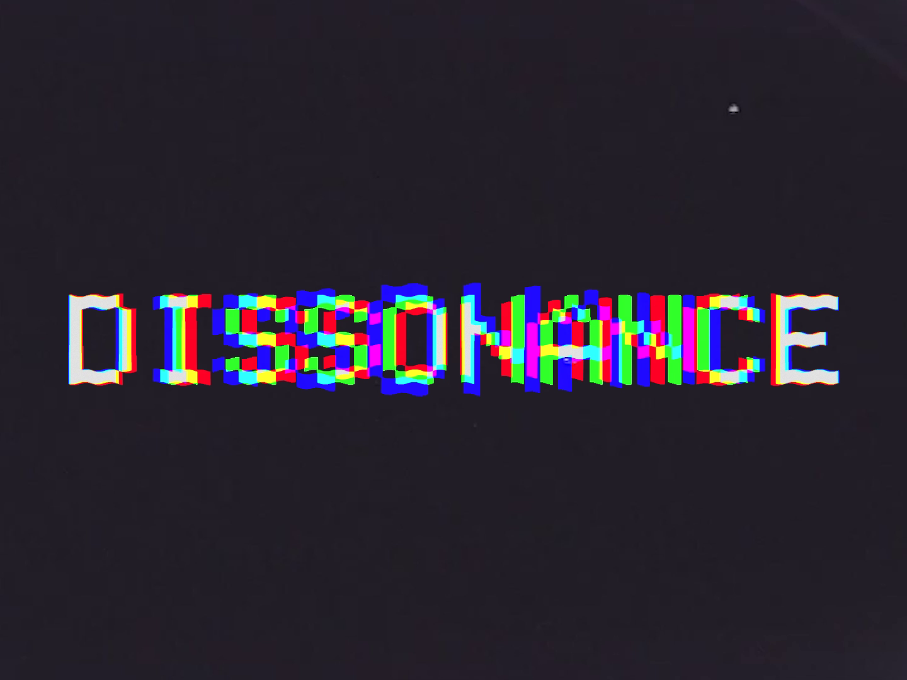
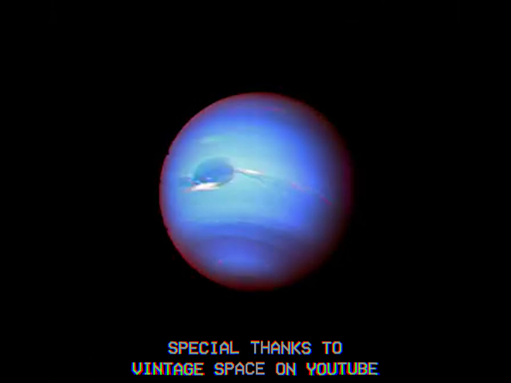

Overview

This project was aimed to be a title sequence aimed at giving the space age a "feeling". I conceived of the idea when thinking of how one might feel had they found some digital form of communication from among the stars, the terrifying unending void of space itself, or how civilisation might destroy and then rebuild itself and rediscover our journey beyond our pale blue dot.

Project Details
Type: Title Sequence
Tools: Adobe After Effects
Year: 2024
Concept
This project was inspired by Interstellar. I thought the idea of being near a black hole so strong that one can only receive messages, but light itself cannot escape it's gravitational pull for a response, was possibly the most isolating possible circumstance a human being could find themselves in. It was also inspired by my fascination with Voyager 1, the furthest man-made object ever, its golden disc, carrying whatever we thought would best represent all of mankind in a hail-mary attempt to introduce ourselves to whatever other life may exist out there in the tiny, practically-zero chance that our message may be received one day, many many millenia from now if ever.
While existentially horifying, the disc itself becomes a symbol of what has enabled us to survive for so long, and expand beyond what any individual person may be able to achieve in a lifetime. It makes me think of the quote “A society grows great when old men plant trees whose shade they know they shall never sit in.”
I chose the bulgarian folk song "Kaval Sviri" as the accompanying soundtrack for many reasons. It has an otherworldy sound to the western ear, makes use of dissonant notes and harmonies, is oddly haunting yet hopeful, and is something I would have considered putting on the golden discs of the voyagers had it been my choice solely for it's exemplary deomnstration of humanity's greatest invention - culture.
This project makes much use of public commons sapce footage that I found from government institutions and archives of space-era testing as I cannot afford to launch something into space - yet. Leaning into the poorly digitized, 4:3 aspect ratio footage avaialbe to me also gave me the opportunity to try out means of intentionally distorting graphics to make these limitations a stylistic choice.